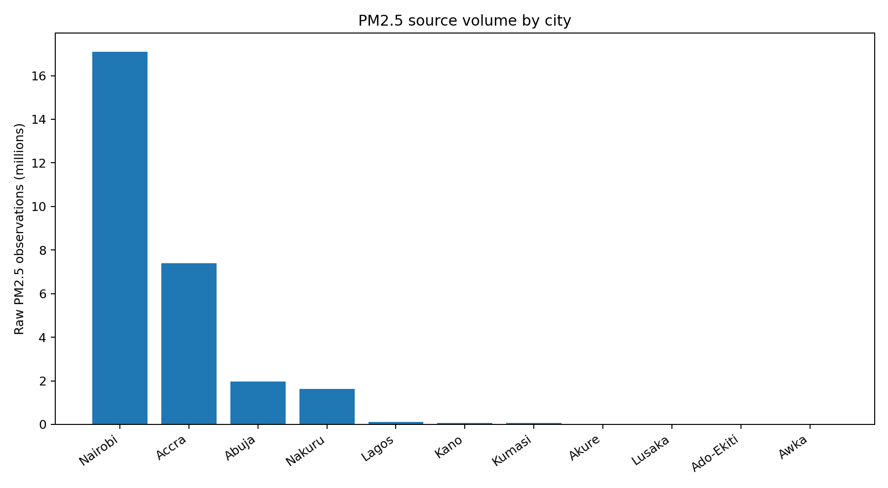
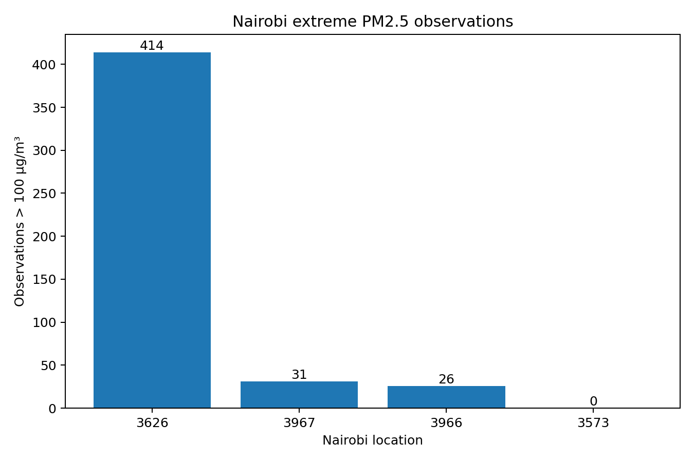
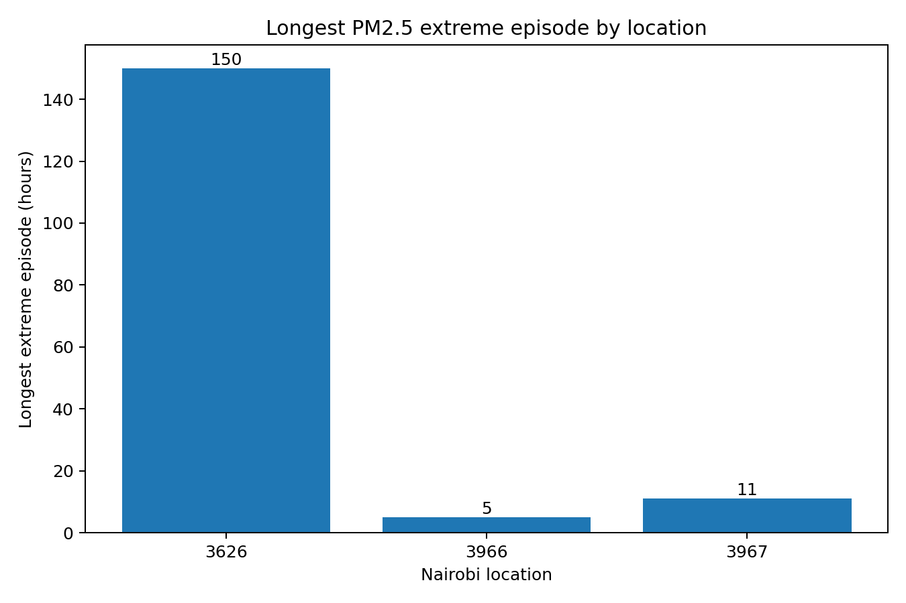
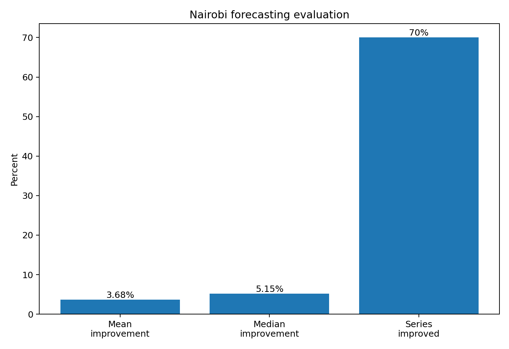

African Air Quality
Analytics
How do you turn a heterogeneous public sensor archive into a defensible analytical dataset — without silently discarding observations or overstating what the data can support?
Data validity is an analytical question.
Public low-cost air-quality sensor networks can provide valuable longitudinal measurements, but the underlying data is rarely analysis-ready.
PM2.5 refers to fine particulate matter small enough to penetrate deep into the lungs and bloodstream, and it is one of the pollutants most consistently linked to respiratory and cardiovascular harm. It is also one of the hardest pollutants to monitor well: fewer than 4% of the world's on-the-ground air quality monitoring stations are located in Africa or South America, and the continent has fewer than 1,500 active continuous monitoring locations. Low-cost sensor networks like Sensors.AFRICA exist to help close that gap — which also means their data inherits real engineering problems that have to be solved before the measurements can be trusted.
This project started with a large public archive from Sensors.AFRICA, accessed through the openAFRICA CKAN API. The objective was not simply to visualize PM2.5. It was to build a reproducible data-engineering and analytics pipeline that could recover, validate, trace, and analyze heterogeneous sensor data without silently discarding observations or overstating what the data could support.
That meant treating source reconstruction, temporal continuity, provenance, quality control, eligibility, and chronological evaluation as first-class analytical concerns.
From 28.3M observations to a canonical dataset.
The source archive contained more than 28 million structurally valid PM2.5 observations. Rather than flattening those records immediately, the pipeline reconstructed the source structure first: datasets, resources, files, cities, sensors, locations, and timestamps.
Measurements recovered from the public Sensors.AFRICA archive before canonical hourly aggregation.
A defined analytical grain: city + sensor + sensor type + location + hour.
The project focused the canonical analytical scope on eight cities while preserving source provenance.
The analytical grain was defined before analysis.
Multiple source resources could contribute to the same sensor and hour. The pipeline therefore reconstructed the source hierarchy and produced a canonical hourly representation rather than treating source files as interchangeable flat tables.
PM1, PM10, temperature, and humidity were catalogued during source reconstruction but were not carried into the canonical PM2.5 analytical dataset or downstream models in this version.

Eligibility was separated from validity.
A sensor does not become analytically useful simply because it has some observations. The project explicitly separated “Can this observation exist in the dataset?” from “Is this series suitable for a particular analysis?”
Rule A was a suitability contract, not a data-quality verdict.
Rule A required a continuous segment of at least 24 hours and at least 24 usable forecasting rows. Under this rule, 183 of the 293 canonical sensor/location units were eligible.
The remaining units were not labelled “bad data.” They simply did not satisfy the minimum continuity requirement for analyses that depended on sustained temporal history.
Minimum continuous segment, with at least 24 usable forecasting rows.
A real analytical warehouse, not a storage layer.
The canonical dataset was loaded into Snowflake, with separate RAW, STAGING, and ANALYTICS layers. dbt formalized the analytical transformations and tests.
Preserves the ingested representation before analytical transformations.
Canonical observations prepared for transformation, testing, and downstream use.
Eligibility, temporal validity, QC, provenance, forecasting population, and analytical facts.
dbt tests included grain and not-null checks plus forecasting-population regression checks.
Three findings changed how the data should be interpreted.
Distance is not enough.
Nearby locations require actual temporal overlap and sensor characteristics before their hourly measurements can be treated as comparable.
Flag first. Delete never.
Extreme PM2.5 values were retained and investigated through their provenance chain rather than removed by an arbitrary cleaning rule.
One sensor stood out.
Location 3626 showed repeated prolonged periods around 3,330 µg/m³ separated by genuine multi-week gaps.
The two locations are approximately 0.6 km apart, yet their simultaneous hourly PM2.5 measurements showed a Pearson correlation of only 0.002.
This is evidence of no detectable linear relationship at the same hour. It does not rule out nonlinear, lagged, or other forms of association.
Pearson correlation is sensitive to extreme values, and both sensors contain readings above 3,000 µg/m³, so a rank-based check remains a V2 item. For contrast, locations 3573 and 3580 correlate at r ≈ 0.78.
A QC threshold became an investigation trigger.
A screening threshold of PM2.5 > 1,000 µg/m³ was used to flag extreme observations for review.
The threshold is an analytical QC rule, not a universal health limit or a claim about the physical maximum of every sensor.
Flagged observations were retained. In Nairobi, 471 observations above 100 µg/m³ (a separate, lower exploratory threshold) across three locations were traced through the full provenance chain.


Location 3626 showed a recurring extreme regime.
Two prolonged periods clustered around 3,330 µg/m³, separated by genuine multi-week data gaps.
- entered a prolonged data dropout
- returned already near the same extreme value
- remained at that level for an extended period
- experienced another long dropout
- again returned near the same extreme value
Power BI was the communication layer, not the analysis.
The final report was structured around three questions. The dashboard communicates the analytical work performed in Python, Snowflake, dbt, and R rather than replacing it.
What does the dataset look like?
Eight-city coverage, canonical versus modeling population, sensor/location coverage, PM2.5 distribution, QC threshold, and flagged observations.
What happens in Nairobi?
Monitoring locations, spatial comparability, extreme locations, temporal anomaly patterns, and provenance-based investigation.
Can PM2.5 be forecast?
Forecasting evaluation coverage, model improvement distribution, persistence versus regression error, and walk-forward evaluation design.

More modeling is not automatically better analysis.
Quality and suitability of the underlying temporal data determine what can legitimately be concluded
The first version deliberately focused on establishing a trustworthy PM2.5 analytical foundation.
A second version could extend that foundation rather than simply adding more charts.
- incorporate temperature and humidity as meteorological covariates
- test whether environmental variables improve next-hour forecasting
- investigate seasonal and meteorological regimes
- evaluate nonlinear forecasting models
- extend the QC sensitivity analysis to the full forecasting set under a documented treatment of flagged observations
- expand deeper statistical analysis beyond Nairobi where data coverage supports it
The dataset should not be treated as a uniform monitoring network.
- sensor coverage is uneven across cities and time
- sensor types and measurement behavior differ
- spatial proximity does not guarantee measurement comparability
- some extreme observations could not be assigned a definitive physical cause
- forecasting performance varies substantially by series
- forecasting results are baseline estimates: in the two series where flagged observations overlap the test folds, conclusions were sensitive to how those observations were treated
- only Nairobi had sufficient depth of data for the project's more detailed spatial, anomaly, and forecasting analysis
The project therefore avoids treating the archive as if every sensor were measuring the same phenomenon with the same reliability.
Every analytical conclusion is constrained by what the underlying temporal data can legitimately support.
The full engineering layer covers source reconstruction, provenance design, canonical hourly aggregation, structural validation, eligibility logic, temporal-validity handling, Snowflake/dbt architecture, anomaly investigation, and chronological forecasting.
The hard part was deciding what the data could legitimately support.
The central challenge was not choosing a sophisticated machine-learning algorithm. It was deciding what data could legitimately be trusted for which analytical purpose, while preserving enough information to investigate observations that did not behave as expected.
The resulting pipeline turns a heterogeneous public sensor archive into a reproducible analytical system and demonstrates a data-engineering principle that applies well beyond air quality: